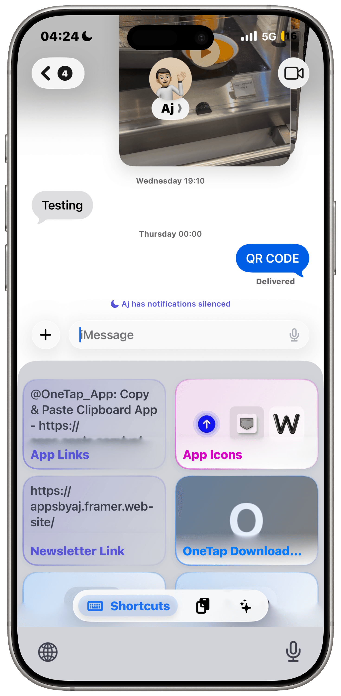
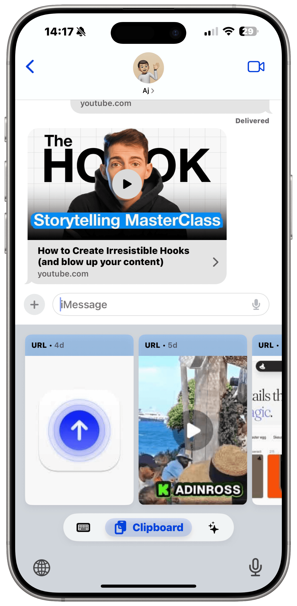

01 — ONETAP
Less friction.
More flow.
Clipboard history, custom shortcuts, and AI-assisted writing. One connected productivity experience for iPhone, iPad, Mac, and Vision Pro.
Explore OneTapFOUNDER · DESIGNER · DEVELOPERRIGHT WHERE YOU TYPE
Your shortcuts.
Your clipboard.

